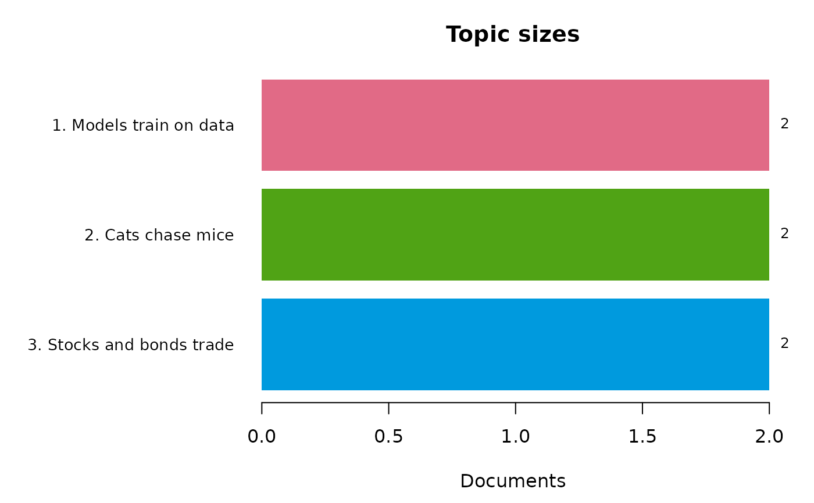
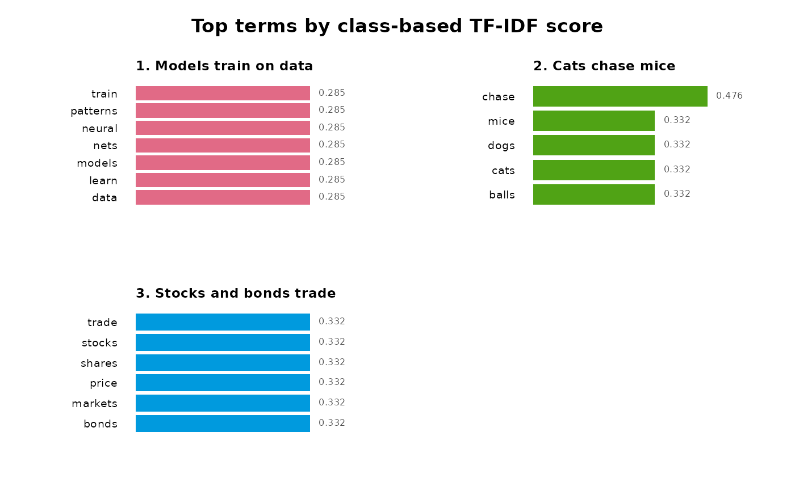
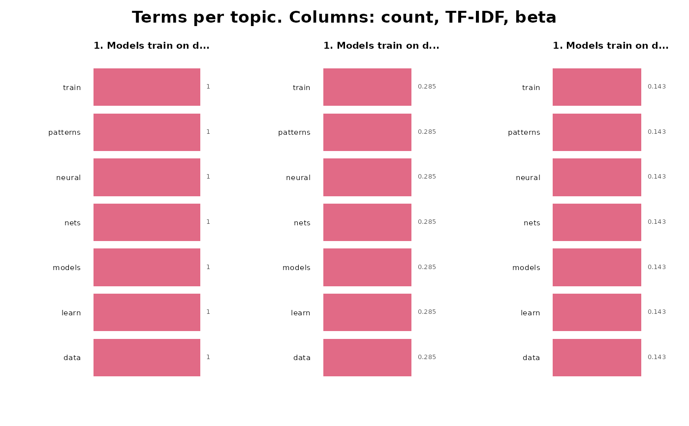
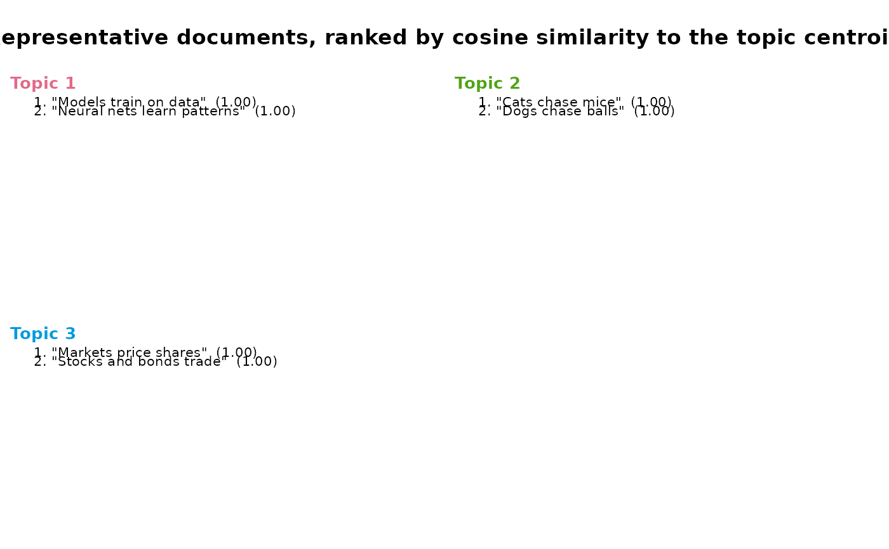
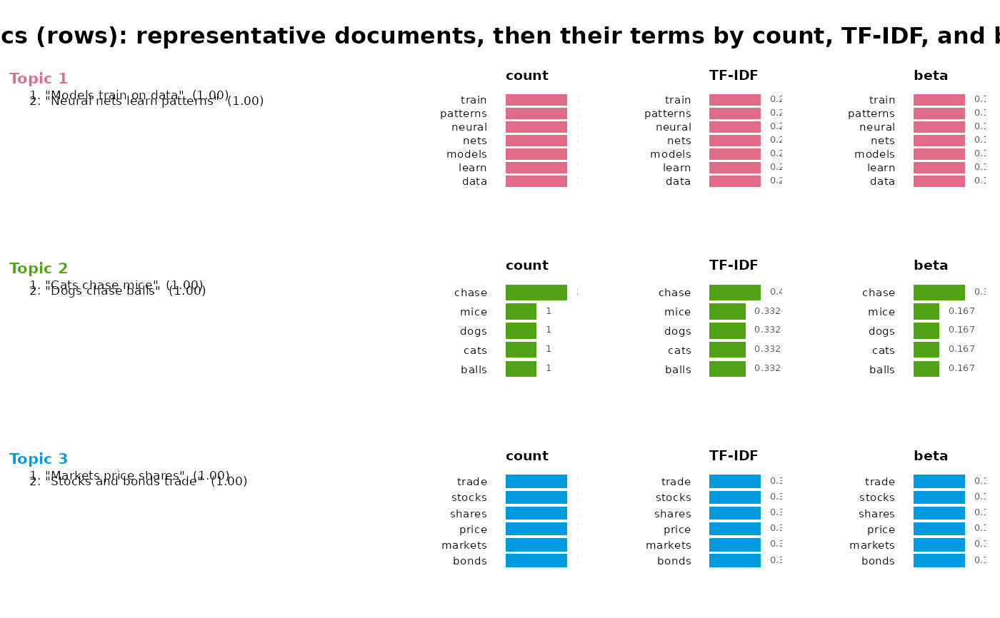
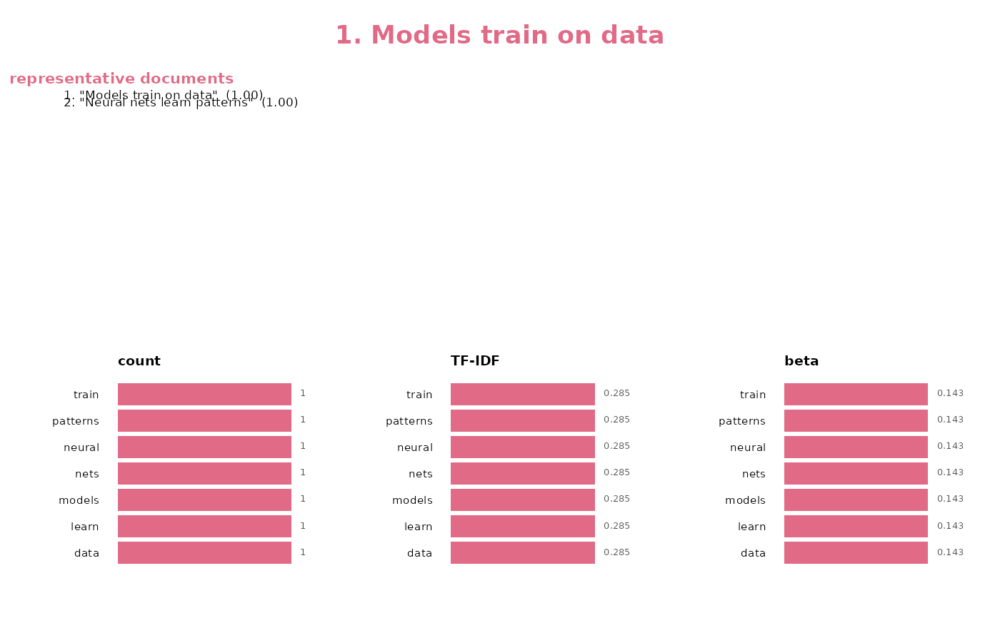
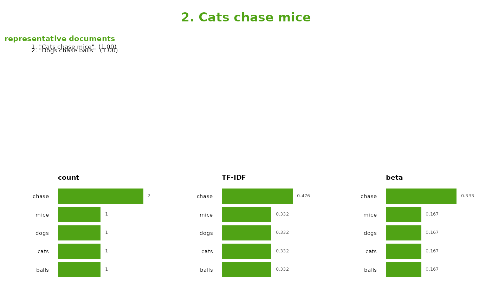
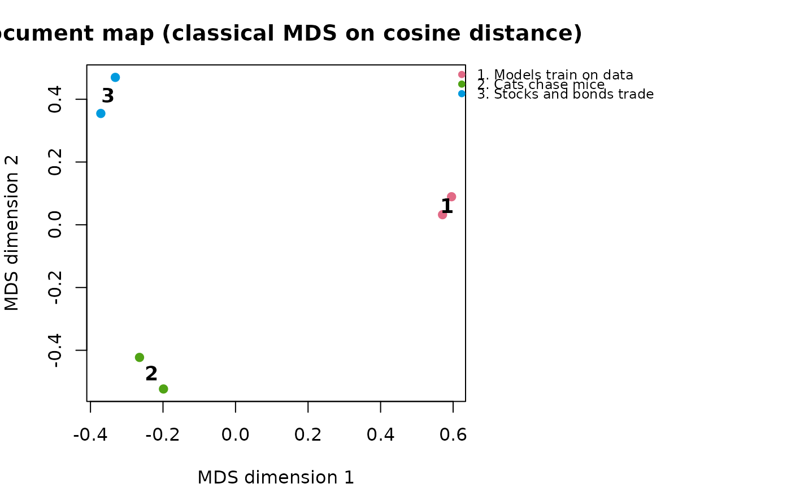

plot() draws one of five base-graphics views of a fitted topic model: how
large the topics are, which words distinguish them, which texts exemplify
them, and how they lie relative to one another in the embedding space.
Together the views support naming the topics and judging whether the chosen
number of topics is adequate.
"sizes" is a bar chart of the number of units (documents, or segments for a
segmented model) in each topic. "terms" shows each topic's top terms by
class-based TF-IDF score, within-topic probability (beta), or count.
"representatives" lists each topic's representative texts, those closest to
its center. "fit" combines both in one row per topic: the representative
texts, then the terms by count, TF-IDF and beta. "map" places the units in
two dimensions by classical multidimensional scaling of their cosine
distances, colored by topic and labeled at each topic's mean position; large
corpora are thinned to max_points by an even, non-random sample within each
topic.
The data behind each view are available as tables: topic_sizes(),
terms(), representatives(), and
as.data.frame(x, what = "documents"). To compare models with different
numbers of topics, plot a compare_topics() result.
Usage
# S3 method for class 'sbert_topic_model'
plot(
x,
type = c("sizes", "terms", "representatives", "fit", "map"),
by = "score",
topics = NULL,
per_topic = FALSE,
n_terms = 8L,
n_representatives = 5L,
colors = topic_palette(nrow(x$topics)),
max_points = 1500L,
main = NULL,
...
)Arguments
- x
A fitted model from
topics().- type
"sizes"(default),"terms","representatives","fit", or"map".- by
For
type = "terms", one or more of"score"(default; class-based TF-IDF),"beta"(within-topic word probability) and"frequency"(within-topic count). Several values draw one row per topic with a column per measure.- topics
Topic numbers to draw for
"terms","representatives"and"fit", orNULL(default) for all.- per_topic
For
"terms","representatives"and"fit", draw one figure per topic instead of one grid (defaultFALSE).- n_terms
Terms per panel for
"terms"and"fit"(default 8).- n_representatives
Texts per topic for
"representatives"and"fit"(default 5). More than the model stored are recomputed from its stored embeddings, if any.- colors
Topic colors, at least one per topic (default
topic_palette()).- max_points
Maximum number of units drawn by
"map"(default 1500).- main
Title for
"fit"drawn as one figure, orNULL(default) for a title naming the layout.- ...
Unused.
Conditions
sbert_no_embeddings when type = "map" and the model stores no
embeddings; sbert_bad_input when type = "map" and the model has fewer
than three units; sbert_plot_too_small when the device is too small for
the "fit" grid. Warning sbert_few_representatives when more
representatives are requested than stored and the model has no
embeddings to recompute them.
See also
topic_sizes(), terms(),
representatives() for the tables behind the views; topic_palette()
for the colors; compare_topics() to compare numbers of topics.
Examples
text <- c(
"Cats chase mice", "Dogs chase balls",
"Stocks and bonds trade", "Markets price shares",
"Neural nets learn patterns", "Models train on data"
)
embeddings <- rbind(
c(1, 0, 0), c(0.9, 0.1, 0),
c(0, 1, 0), c(0.1, 0.9, 0),
c(0, 0, 1), c(0.05, 0, 0.95)
)
topic_model <- topics(text, 3, embeddings = embeddings)
plot(topic_model, type = "sizes")

plot(topic_model, type = "terms")

plot(topic_model, type = "terms", by = c("frequency", "score", "beta"),
topics = 1)

plot(topic_model, type = "representatives")

plot(topic_model, type = "fit")

plot(topic_model, type = "fit", per_topic = TRUE)


 plot(topic_model, type = "map")
plot(topic_model, type = "map")
